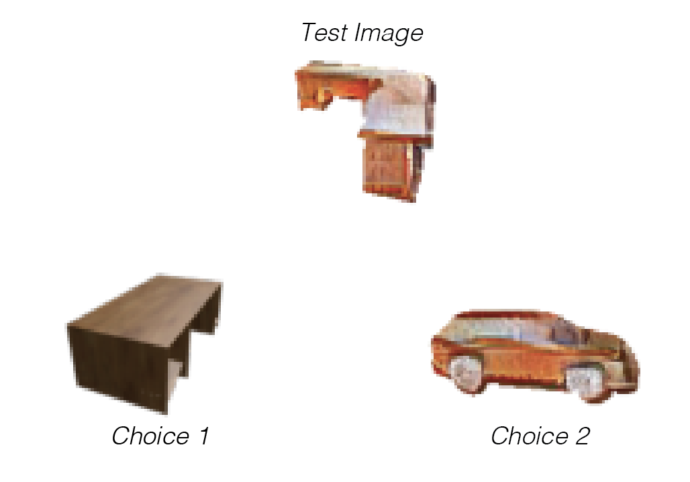

<!DOCTYPE html>
<html>
  <head>
    <title>Image Similarity Experiment</title>
    <script src="https://unpkg.com/jspsych@7.0.0"></script>
    <script src="https://unpkg.com/@jspsych/plugin-html-keyboard-response@1.0.0"></script>
    <script src="https://unpkg.com/@jspsych/plugin-html-button-response@1.0.0"></script>

    <script src="https://unpkg.com/@jspsych/plugin-image-keyboard-response@1.0.0"></script>
    <script src="https://unpkg.com/@jspsych/plugin-image-slider-response@1.0.0"></script>
    <script src="https://unpkg.com/@jspsych/plugin-image-button-response@1.0.0"></script>
    <script src="https://unpkg.com/@jspsych/plugin-preload@1.0.0"></script>
    <script src="https://unpkg.com/@jspsych/plugin-instructions@1.0.0"></script>
    <link href="https://unpkg.com/jspsych@7.0.0/css/jspsych.css" rel="stylesheet" type="text/css" />
    <link rel="stylesheet" href="exp_style.css">
    <script type="text/javascript" src="./socket.io/socket.io.js"></script>
    <script src="functions.js"></script>
    <script src="trial_info/trials_merged.json"></script>
    <script src="trial_info/cc_trials_merged.json"></script>
    <style>
    img{
        vertical-align: middle;
    }
    </style>

  </head>
  <body></body>
  <script>
    /* initialize jsPsych */
    var jsPsych = initJsPsych({
      on_finish: function() {
        console.log('Experiment complete!!!');
        //window.location = 'https://theuselessweb.com/'; // 'https://app.prolific.com/submissions/complete?cc=CK5XXXER'
        window.location = 'https://app.prolific.com/submissions/complete?cc=CX03L7YQ';

        //jsPsych.data.displayData();
      }
    });
    var subject_id = jsPsych.data.getURLVariable('PROLIFIC_PID');
    var study_id = jsPsych.data.getURLVariable('STUDY_ID');
    var session_id = jsPsych.data.getURLVariable('SESSION_ID');
    var num_trials = 200;
    var num_lastblock_trials = 50;
    var trial_indices = randSampleWithoutReplacement(num_trials, 0, 2000);
    var lastblock_trial_indices = randSampleWithoutReplacement(num_lastblock_trials, 0, 2000);
    var cueTypes = ['shape', 'texture'];
    var whichCue = cueTypes[randint(2)];


    console.log('Subject ID: ' + subject_id);
    console.log('Study ID: ' + study_id);
    console.log('Session ID: ' + session_id);
    console.log('Cue Type: ' + whichCue);
    jsPsych.data.addProperties({
      subject_id: subject_id,
      study_id: study_id,
      session_id: session_id,
      trial_indices: trial_indices,
      lastblock_trial_indices: lastblock_trial_indices,
      whichCue: whichCue
    });

    /* create timeline */

    /* preload images */
    var preload = {
      type: jsPsychPreload,
      auto_preload: true,
      images: []
    };

    /* define instructions trial */
    var instructions = {
      type: jsPsychInstructions,
      pages: [
        // First page: Welcome!
        "<p style= 'font-size:200%' ><b>Welcome to our experiment!</b></br></p>" +
        "<p>This is a visual judgment experiment. Let's start off with some instructions. </p>",
        "<p style= 'font-size:300%'><b>Image similarity judgment</b></br></p>" +
        "<p>In this experiment, you will complete a series of trials. On each trial, you will first see an image flashed very briefly on the screen - we call this first image the 'test image'. You will then be shown two images and asked to choose the one which appears more visually similar to the initially presented test image. You will indicate your response by pressing either the left arrow key or the right arrow key. After you submit your answer, you will automatically move onto the next question. </p>",
        "<p>Below is an example video of a few trials. Each trial begins with a small cross in the middle of the screen, which tells you to get ready! Then the 'test' image will be shown on the screen and will then quickly disappear, and you will then be shown two choices. You must press either the left arrow key or the right arrow key on your keyboard to indicate which of these two choices looks more similar to the test image. There is no time limit to respond; however, we encourage you to respond as quickly as possible while maintaining accurate responses. </p>" +
        "<p></p>",
        "<p>We will now begin the task! We expect this to take approximately 20 minutes. We have placed break points every 2-3 minutes to give you a chance to take a rest if needed before proceeding. <br> Please do not rush through the task. At the end, you will be rewarded for your effort and for your accurate performance.</p>" +
        "<p>Remember: your task is to observe closely the test image and then choose which of the two choices below looks most similar to the test image.</p>" +
        "<p>Press next to begin the task. Good luck! </p>"
      ],
      show_clickable_nav: true,
      post_trial_gap: 1000,
    };
   
    /* define trial stimuli array for timeline variables */
    //var all_imgs = stimulus_info.all_images;

    var sample_imgs = trial_info['sample_img'];
    var choice_imgs = trial_info['choice_imgs'];
    var trial_type = trial_info['trial_type'];
    var choice_order = trial_info['choice_order'];
    var stim_set = trial_info['stim_set'];


    var trials = [];
    var duration = 500; // ms
    var stimwidth = 400; // pix

    for (i = 0; i<num_trials; i++){
      idx = trial_indices[i];

      var fixation = {
        type: jsPsychHtmlKeyboardResponse,
        stimulus: '<div style="font-size:60px;">+</div>',
        choices: "NO_KEYS",
        trial_duration: 500,
        data: {
          task: 'fixation'
        }
      };

      var sample_trial = {
        type: jsPsychImageKeyboardResponse,
        stimulus: 'all_imgs/' + sample_imgs[idx] + '.png',
        stimulus_width: stimwidth,
        trial_duration: duration,
        post_trial_gap: 1000,
      }

      let choices_i = choice_imgs[idx];
      choices_i[0] = 'all_imgs/' + choices_i[0] + '.png';
      choices_i[1] = 'all_imgs/' + choices_i[1] + '.png';

      preload.images.push(choices_i[0], choices_i[1]);

      var choice_trial = {
        type: jsPsychHtmlKeyboardResponse,
        stimulus: ``,
        choices: ['ArrowLeft', 'ArrowRight'],
        prompt: "Press either the left or right arrow key to indicate which image looked more like the previous one.",
        data: {
          task: 'matchtosample',
          trial_id: idx,
          sample: sample_imgs[idx],
          choice1: choice_imgs[idx][choice_order[idx][0]],
          choice2: choice_imgs[idx][choice_order[idx][1]],
          correct_choice: choice_imgs[idx][1],
          stim_set: stim_set[idx],
          tasktype: trial_type[idx],
          sample_duration: duration,
          image_size_px: stimwidth,
        },
        on_finish: function(data){
          if(data.response == 'arrowleft'){
            data.subject_choice_num = 0;
          } else if (data.response == 'arrowright') {
            data.subject_choice_num = 1;
          } else {
            data.subject_choice_num = -1;
          }
          choices = [data.choice1, data.choice2];

          data.subject_choice = choices[data.subject_choice_num];
          save_trial_to_database(data);
        }
      };

      trials.push(fixation, sample_trial, choice_trial);

      if (i>0 && i % 50 == 0){
        var trial_break = {
          type: jsPsychHtmlKeyboardResponse,
          stimulus: '<p></p>',
          prompt: Math.floor(i/50) + ' out of 5 trial blocks complete. Press any key to begin the next block of trials',
        };
        trials.push(trial_break);
      } 

    }
   
    var postexp_question = {
      type: jsPsychHtmlButtonResponse,
      stimulus: '<p>The choice images you saw sometimes matched the test image in shape, sometimes in texture, and sometimes in color. Which feature did you most often use to choose the image most similar to the test image?</p>',
      choices: ['Mostly shape', 'Mostly texture', 'Mostly color', 'No consistent strategy', 'Didnt think about it, just went with my gut'],
      data: {
        task: 'postquestion',
      },
      on_finish: function(data){
        save_trial_to_database(data)
      }
    }

    /* define instructions trial */
    if (whichCue == 'shape') {
      var lastblock_instructions = {
        type: jsPsychInstructions,
        pages: [
          "<p style= 'font-size:300%'><b>Last block: Shape-based Discrimination</b></br></p>" +
          "<p>Nice job thus far. You're almost done with the experiment. We just have one last set of trials to go: for these trials, we want you to especially focus on the shape of the objects, not on their color or texture, when deciding which of the two choices is more similar to the initially presented test image. </p>",
          "<p>Below is an example of the 3 images you might see in one trial. For illustration purposes, we've shown all 3 images together, though in a real trial, the test image would be shown first and then only after it disappears, you would see the two choice images. </p>" +
          "<p></p>"+
          "<p> Now in this example, the test image has the shape of a desk but has the texture and color of an orange brick. Each of the choices shares something in common with the test image - choice 1 has a similar shape, as it is also a desk, and choice 2 has a similar orange brick texture/color. For all of the remaining trials in this experiment, we want you to pick the choice with the more similar <strong> shape/category </strong>  to the test image. Therefore, on this trial, you would choose choice 1 and would click the left arrow to indicate your choice.</p>",
          "<p>We will now begin the final block! Remember: your task is to observe closely the test image and then choose which of the two choices below has the most similar <strong> shape </strong> to the test image.</p>" +
          "<p>Press next to begin the final block. Good luck! </p>"
        ],
        show_clickable_nav: true,
        post_trial_gap: 1000,
      };
    } 
    else {
      var lastblock_instructions = {
        type: jsPsychInstructions,
        pages: [
          "<p style= 'font-size:300%'><b>Last block: Texture-based Discrimination</b></br></p>" +
          "<p>Nice job thus far. You're almost done with the experiment. We just have one last set of trials to go: for these trials, we want you to especially focus on the texture of the objects, not on their shape or category, when deciding which of the two choices is more similar to the initially presented test image. </p>",
          "<p>Below is an example of the 3 images you might see in one trial. For illustration purposes, we've shown all 3 images together, though in a real trial, the test image would be shown first and then only after it disappears, you would see the two choice images. </p>" +
          "<p></p>"+
          "<p> Now in this example, the test image has the shape of a desk but has the texture and color of an orange brick. Each of the choices shares something in common with the test image - choice 1 has a similar shape, as it is also a desk, and choice 2 has a similar orange brick texture/color. For all of the remaining trials in this experiment, we want you to pick the choice with the more similar <strong> texture/color </strong>  to the test image. Therefore, on this trial, you would choose choice 2 and would click the right arrow to indicate your choice.</p>",
          "<p>We will now begin the final block! Remember: your task is to observe closely the test image and then choose which of the two choices below has the most similar <strong> texture </strong> to the test image.</p>" +
          "<p>Press next to begin the final block. Good luck! </p>"
        ],
        show_clickable_nav: true,
        post_trial_gap: 1000,
      };   
    }
 
    var sample_imgs = cc_trial_info['sample_img'];
    var choice_imgs = cc_trial_info['choice_imgs'];
    var trial_type = cc_trial_info['trial_type'];
    var choice_order = cc_trial_info['choice_order'];
    var stim_set = cc_trial_info['stim_set'];
  
    var lastblock_trials = [];
    for (i = 0; i<num_lastblock_trials; i++){
      idx = lastblock_trial_indices[i];

      var fixation = {
        type: jsPsychHtmlKeyboardResponse,
        stimulus: '<div style="font-size:60px;">+</div>',
        choices: "NO_KEYS",
        trial_duration: 500,
        data: {
          task: 'fixation'
        }
      };

      var sample_trial = {
        type: jsPsychImageKeyboardResponse,
        stimulus: 'all_imgs/' + sample_imgs[idx] + '.png',
        stimulus_width: 400,
        trial_duration: 500,
        post_trial_gap: 1000,
      }

      let choices_i = choice_imgs[idx];
      choices_i[0] = 'all_imgs/' + choices_i[0] + '.png';
      choices_i[1] = 'all_imgs/' + choices_i[1] + '.png';

      preload.images.push(choices_i[0], choices_i[1]);

      var choice_trial = {
        type: jsPsychHtmlKeyboardResponse,
        stimulus: ``,
        choices: ['ArrowLeft', 'ArrowRight'],
        prompt: "Press either the left or right arrow key to indicate which image had more similar " + whichCue + " to the test image.",
        data: {
          task: 'cued_matchtosample',
          trial_id: idx,
          sample: sample_imgs[idx],
          choice1: choice_imgs[idx][choice_order[idx][0]],
          choice2: choice_imgs[idx][choice_order[idx][1]],
          correct_choice: choice_imgs[idx][1],
          stim_set: stim_set[idx],
          tasktype: trial_type[idx] + '_cue' + whichCue,
        },
        on_finish: function(data){
          if(data.response == 'arrowleft'){
            data.subject_choice_num = 0;
          } else if (data.response == 'arrowright') {
            data.subject_choice_num = 1;
          } else {
            data.subject_choice_num = -1;
          }
          choices = [data.choice1, data.choice2];

          data.subject_choice = choices[data.subject_choice_num];
          save_trial_to_database(data);
        }
      };

      lastblock_trials.push(fixation, sample_trial, choice_trial);
    } // end for loop

    // define debrief
    var debrief_block = {
      type: jsPsychHtmlKeyboardResponse,
      stimulus: function() {

        var trials = jsPsych.data.get().filter({task: 'matchtosample'});
        var rt = Math.round(trials.select('rt').mean());

        return `<p>You have completed the experiment!</p>
          <p>Your average response time was ${rt}ms.</p>
          <p>Press any key to complete the experiment. Thank you!</p>`;
      }
    };

    // Add to timeline
    var timeline = [];
    timeline.push(preload);
    timeline.push(instructions);
    timeline.push(...trials);
    timeline.push(postexp_question);
    timeline.push(lastblock_instructions);
    timeline.push(...lastblock_trials);
    timeline.push(debrief_block);

    // start the experiment 
    jsPsych.run(timeline);

  </script>
</html>
